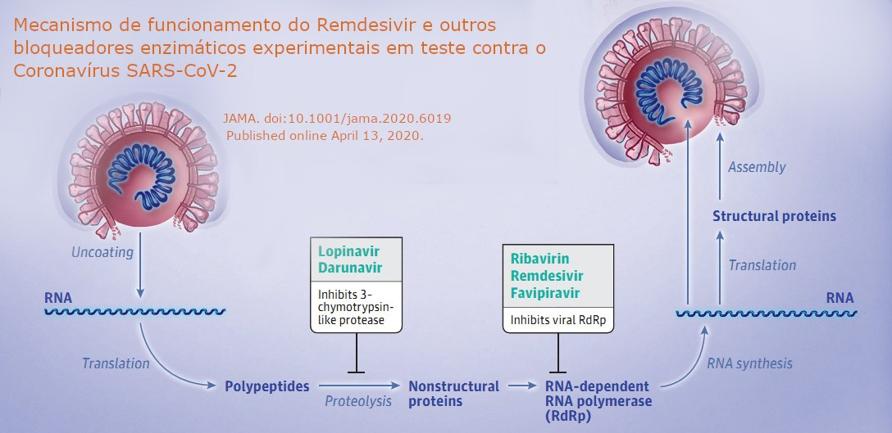

Primeiros Resultados de Ensaios Clínicos
Christiane Lourenço Nogueira e Oscar Bruna-Romero
04/05/2020
No final do mês de abril de 2020, a empresa farmacêutica Gilead Sciences e o Instituto Nacional de Alergia e Doenças Infecciosas (NIAID – National Institute of Allergy and Infectious Diseases), ambos sediados nos EUA, anunciaram resultados promissores de ensaios clínicos com o medicamento Remdesivir para o tratamento da COVID-19, doença respiratória causada pelo vírus SARS-CoV-2. Até o momento, não há nenhum medicamento aprovado para o tratamento de pacientes acometidos por essa doença.
O Remdesivir foi descrito em 2016 com o nome GS-5734, uma prodroga (monofosforamidato) que é transformada in vivo num análogo de nucleosídeo (adenosina). Esse fármaco foi desenvolvido pela Gilead Sciences contra o vírus Ebola, funcionando de forma muito eficiente contra ele, assim como contra outros filovírus. O nucleosídeo trifosfato ativo se forma em múltiplos tipos celulares e age como “terminador de cadeia” do RNA ao inibir a atividade da enzima (RNA polimerase dependente de RNA, ou RdRp) que multiplica o genoma do vírus para gerar novos vírus que continuam a infecção. Embora estudos in vitro e in vivo tenham demonstrado sua segurança e eficácia terapêutica contra alguns tipos de coronavírus, incluindo o MERS-CoV, SARS-CoV e SARS-CoV-2\(^{[1-7]}\), ainda não há aprovação e licença para o seu uso em humanos.

A empresa Gilead está realizando ensaios clínicos randomizados e placebo-controlados com o Remdesivir\(^{[8,10]}\). Um estudo randomizado é aquele no qual os participantes são divididos em grupos de forma aleatória. Neste caso, um grupo foi tratado com placebo e outros dois receberam tratamento com o Remdesivir. Em um destes grupos que recebeu o medicamento, o tratamento teve duração de 5 dias, enquanto no outro o tratamento foi de 10 dias. Trezentos e noventa e sete (397) pacientes com manifestações graves da doença foram incluídos na fase inicial deste estudo. Todos apresentavam evidência de pneumonia e níveis reduzidos de oxigênio, porém sem necessidade de ventilação mecânica. Os pacientes receberam 200 mg de Remdesivir via intravenosa no primeiro dia de tratamento. Nos dias seguintes, receberam 100 mg por dia, durante 5 ou 10 dias consecutivos. Os resultados mostraram que o tempo médio para melhora do quadro clínico de 50% dos pacientes foi de 10 dias para o grupo que recebeu 5 dias de tratamento com o medicamento, e de 11 dias para aquele tratado por 10 dias. Cerca de 60% dos pacientes de ambos os grupos receberam alta hospitalar no 14º dia após o início do tratamento. Além disso, os pacientes que receberam Remdesivir dentro de 10 dias após o início dos sintomas, apresentaram melhores resultados em comparação àqueles cujo tratamento começou depois de 10 dias do início da manifestação dos sintomas.
O Remdesivir foi, de maneira geral, muito bem tolerado em ambos os grupos. Os efeitos adversos mais comuns observados nos grupos tratados com Remdesivir por 5 e 10 dias foram náusea (10,0% versus 8,6%, respectivamente) e insuficiência respiratória aguda (6,0% versus 10,7%, respectivamente). Desta forma, os pacientes acometidos pela COVID-19 apresentaram uma melhora significativa no quadro clínico após o tratamento com o medicamento. Além disso, o estudo demonstrou que não houve diferença significativa na melhora do quadro clínico dos pacientes tratados por 5 ou 10 dias. Este resultado é muito promissor, pois além de ter mostrado eficácia no tratamento da COVID-19, um regime terapêutico de apenas 5 dias (ao invés de 10 dias) possibilitaria expandir significativamente o número de pacientes que poderiam ser tratados com a capacidade atual de suprimento de Remdesivir pela empresa. A segunda fase deste estudo clínico já está em andamento, no qual mais 5600 pacientes serão avaliados, incluindo aqueles hospitalizados em centros de terapia intensiva sob ventilação mecânica\(^{[8]}\). A Gilead anunciou que, em breve, estes resultados serão publicados com maiores detalhes em uma revista científica.
O Instituto Nacional de Alergia e Doenças Infecciosas (NIAID) também está conduzindo ensaios clínicos randomizados e placebo-controlados com Remdesivir em 68 locais, sendo 47 nos EUA e 21 em países da Europa e Ásia\(^{[9,10]}\). O principal objetivo deste estudo foi avaliar a segurança e eficácia do Remdesivir para o tratamento da COVID-19. Hum mil e sessenta e três (1063) adultos hospitalizados, com diagnóstico laboratorial positivo para SARS-CoV-2, com achado de infiltrado pulmonar em imagem radiológica (raio-X, tomografia etc), com baixa saturação de oxigênio, requerendo oxigenoterapia ou ventilação mecânica, foram incluídos neste estudo. Duzentos miligramas (200 mg) de Remdesivir foram administrados por via intravenosa no primeiro dia de tratamento. Nos dias seguintes, os pacientes receberam 100 mg por dia enquanto hospitalizados, não ultrapassando 10 dias de medicação. Os resultados mostraram que a recuperação dos pacientes que receberam o medicamento foi 31% mais rápida do que os pacientes que receberam placebo. O tempo médio de recuperação foi de 11 dias para os pacientes tratados com Remdesivir, enquanto o tempo médio para os que receberam placebo foi de 15 dias. Além disso, houve uma redução estatisticamente significativa na taxa de mortalidade dos pacientes que receberam o Remdesivir (8,0%) em comparação ao grupo placebo (11,6%). Os resultados deste estudo estão sendo reunidos para posterior publicação em revista científica.
Contrariando os estudos acima, um ensaio clínico randomizado e placebo-controlado, realizado em hospitais de Hubei, na China, mostrou que o uso de Remdesivir não foi eficiente para o tratamento de pacientes acometidos pela doença COVID-19\(^{[11]}\). Foram avaliados 237 pacientes hospitalizados com diagnóstico laboratorial de infecção por SARS-CoV-2, com saturação de oxigênio igual ou inferior a 94% em ar ambiente e com confirmação radiológica de pneumonia. Destes pacientes, 158 foram submetidos ao tratamento com Remdesivir e 79 a tratamento com placebo. Os resultados mostraram que não houve diferença estatisticamente significativa entre o grupo tratado com o medicamento e o grupo controle. Devido ao limitado número de participantes incluídos neste estudo, os autores sugerem uma ampliação do ensaio clínico para confirmação dos resultados.
Entretanto, diante dos resultados dos ensaios clínicos realizados pela Gilead e pelo NIAID, o FDA (Food and Drug Administration), órgão do governo dos EUA que controla a aprovação de medicamentos e alimentos, emitiu uma nota, no dia 1º de maio de 2020, aprovando o uso emergencial de Remdesivir para pacientes acometidos por COVID-19\(^{[12]}\). A medicação deve ser utilizada apenas para tratar crianças e adultos hospitalizados com suspeita ou com confirmação laboratorial de infecção por SARS-CoV-2, que possuam saturação de oxigênio igual ou inferior a 94% em ar ambiente, e que necessitem de oxigenoterapia, ventilação mecânica ou oxigenação por membrana extracorpórea. A distribuição desta medicação para os hospitais será de responsabilidade da empresa Gilead\(^{[10]}\). Isso não significa que o Remdesivir está sendo aprovado pelo FDA para uso e comercialização. O FDA apenas emite autorização para uso emergencial de produtos não aprovados que podem tratar uma doença com risco de vida quando não há alternativas aprovadas disponíveis. No momento, há pelo menos 18 estudos clínicos deste medicamento em andamento em diferentes países, que irão avaliar e confirmar sua eficácia e segurança.
[1] Warren, T.K., Jordan, R., Lo M.K. et al. Therapeutic efficacy of the small molecule GS-5734 against Ebola virus in rhesus monkeys.Nature. 2016 Mar 17;531(7594):381-5.
[2] de Wit, E., Feldmann, F., Cronin, J. et al. (2020). Prophylactic and therapeutic Remdesivir (GS-5734) treatment in the rhesus macaque model of MERS-CoV infection. Proceedings of the National Academy of Sciences of the United States of America. 117, 6771-6776.
[3] Sheahan, T. P., Sims, A. C., Graham, R. L. et al. (2017). Broad-spectrum antiviral GS-5734 inhibits both epidemic and zoonotic coronaviruses. Science Translational Medicine. 9, 396.
[4] Sheahan, T. P., Sims, A. C., Leist, S. R. et al. (2020). Comparative therapeutic efficacy of Remdesivir and combination lopinavir, ritonavir, and interferon beta against MERS-CoV. Nature Communications. 11, 222.
[5] Mulangu, S., Dodd, L. E., Davey, R. T Jr et al. (2019). A randomized, controlled trial of Ebola virus disease therapeutics. The New England Journal of Medicine. 381, 2293-2303.
[6] Wang, M.; Cao, R.; Zhang, L.; Yang, X.; Liu, J.; Xu, M.; Shi, Z.; Hu, Z.; Zhong, W.; Xiao, G. (2020). Remdesivir and chloroquine effectively inhibit the recently emerged novel coronavirus (2019-nCoV) in vitro. Cell Research. 30, 269–271.
[7] Gordon, C. J., Tchesnokov, E. P., Woolner, E.; Perry, J. K., Feng, J. Y., Porter, D. P., Götte, M. (2020). Remdesivir is a direct-acting antiviral that inhibits RNA-dependent RNA polymerase from severe acute respiratory syndrome coronavirus 2 with high potency Calvin. Journal of Biological Chemistry.
[8] Gilead. Gilead Announces Results From Phase 3 Trial of Investigational Antiviral Remdesivir in Patients With Severe COVID-19. Disponível em: https://www.gilead.com/news-and-press/press-room/press-releases/2020/4/gilead-announces-results-from-phase-3-trial-of-investigational-antiviral-remdesivir-in-patients-with-severe-covid-19.
[9] Medcape. Hughes, S. Remdesivir Now ‘Standard of Care’ for COVID-19, Fauci Says. Disponível em: https://www.medscape.com/viewarticle/929685
[10] U.S. National Library of Medicine. Clinical Trials. Disponível em: https://clinicaltrials.gov/
[11] Wang, Y. et al. (2020). Remdesivir in adults with severe COVID-19: a randomised, double-blind, placebo-controlled, multicentre trial. The Lancet.
[12] FDA – U.S. Food and Drug administration. Emergency Use Authorization (EUA) for emergency use of Remdesivir for the treatment of hospitalized 2019 coronavirus disease (COVID-19) patients. Disponível em: https://www.fda.gov/media/137564/download